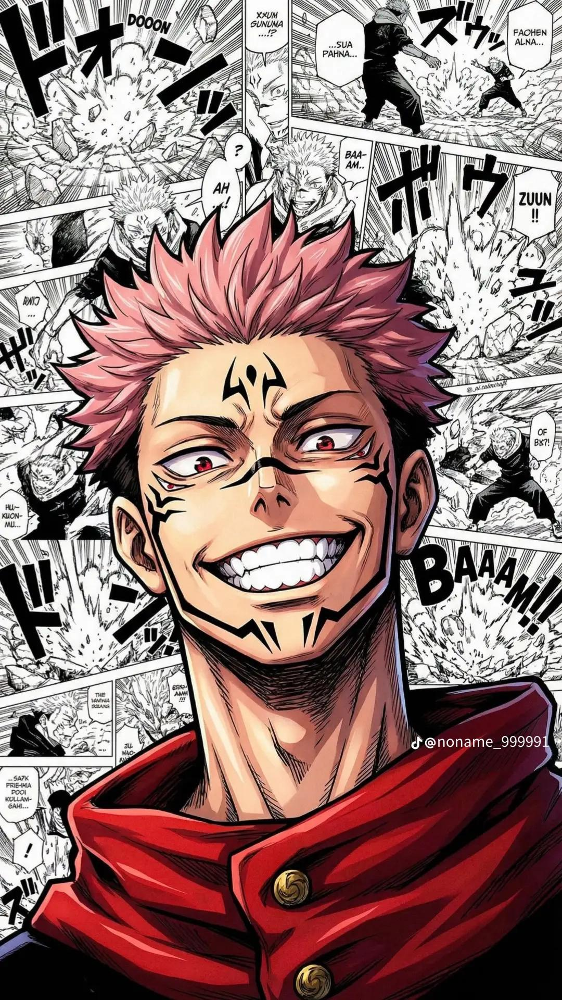

Je m'appelle Waly, étudiant en informatique passionné par le développement web et les nouvelles technologies. Depuis mes débuts, je m'intéresse à la création de sites web modernes et interactifs.
J’aime résoudre des problèmes, apprendre de nouvelles technologies et transformer mes idées en projets concrets.
Mon objectif est de devenir un développeur web professionnel capable de créer des applications performantes et innovantes. Je souhaite également développer mes propres projets et lancer des solutions digitales utiles.
En parallèle, je travaille sur des projets personnels comme la création d’un site e-commerce et le développement d’une marque de t-shirts.
